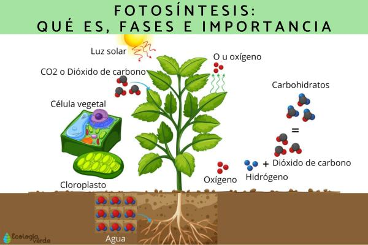

Temas de Biología
1. Respiración Celular

La respiración celular es un proceso por el cual las células transforman la glucosa y el oxígeno en energía (ATP).
Tipos:
- Aeróbica: ocurre en presencia de oxígeno. Produce 36 ATP.
- Anaeróbica: ocurre sin oxígeno. Produce 2 ATP.
Fórmula: C6H12O6 + 6O2 → 6CO2 + 6H2O + Energía (ATP)
2. Los Reinos de la Vida

Los seres vivos se agrupan en cinco reinos según su estructura celular, forma de nutrición y organización:
| Reino | Tipo de célula | Ejemplos | Nutrición |
|---|---|---|---|
| Monera | Procariota | Bacterias | Autótrofa o Heterótrofa |
| Protista | Eucariota | Algas, protozoos | Ambas |
| Fungi | Eucariota | Hongos | Heterótrofa |
| Plantae | Eucariota | Plantas | Autótrofa |
| Animalia | Eucariota | Animales | Heterótrofa |
3. ADN y ARN

ADN: contiene el código genético y se encuentra en el núcleo. Tiene forma de doble hélice.
ARN: lee el ADN y ayuda a sintetizar proteínas. Se encuentra en el núcleo y el citoplasma.
| Característica | ADN | ARN |
|---|---|---|
| Azúcar | Desoxirribosa | Ribosa |
| Bases | A-T-C-G | A-U-C-G |
| Forma | Doble hélice | Sencilla |
| Ubicación | Núcleo | Núcleo y citoplasma |
4. Fotosíntesis
Proceso mediante el cual las plantas convierten luz solar en energía química.
Fórmula: 6CO2 + 6H2O + luz solar → C6H12O6 + 6O2
Ocurre en los cloroplastos de las células vegetales y libera oxígeno.
5. Fases y Tipos de Metabolismo
Es el conjunto de reacciones químicas en un organismo. Se divide en:
- Anabolismo: construye moléculas, como proteínas y ácidos nucleicos.
- Catabolismo: descompone moléculas para liberar energía (como en la respiración celular).
6. Célula Animal

Es eucariota, sin pared celular ni cloroplastos. Tiene:
- Núcleo: controla la célula.
- Mitocondria: produce energía.
- Aparato de Golgi: empaca sustancias.
- Lisosomas: digieren materiales.
- Membrana: regula lo que entra y sale.
7. Célula Vegetal

Es eucariota y posee:
- Pared celular: le da forma rígida.
- Cloroplastos: hacen la fotosíntesis.
- Vacuola central: almacena agua y nutrientes.
A diferencia de la célula animal, realiza fotosíntesis y tiene forma más definida.